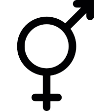
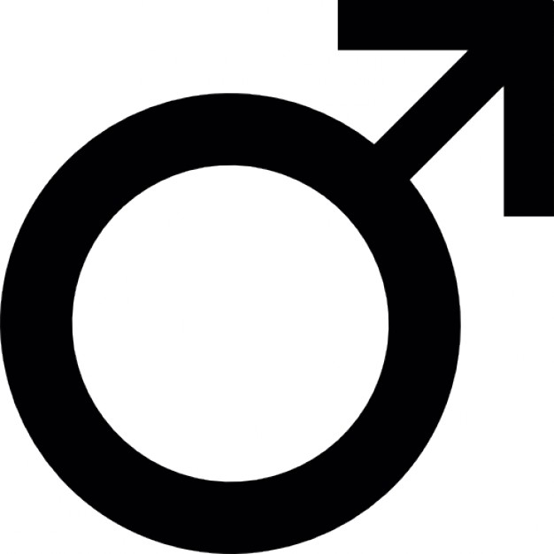
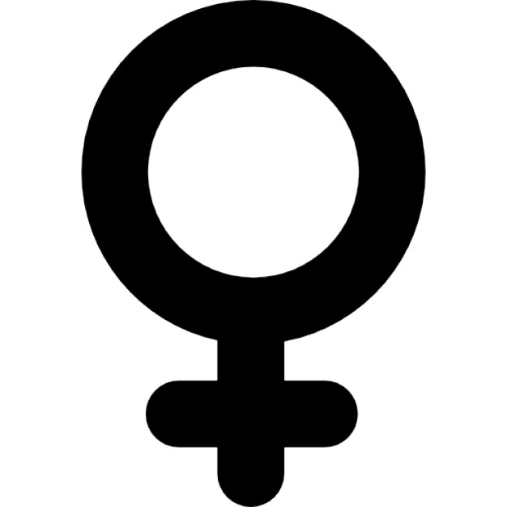
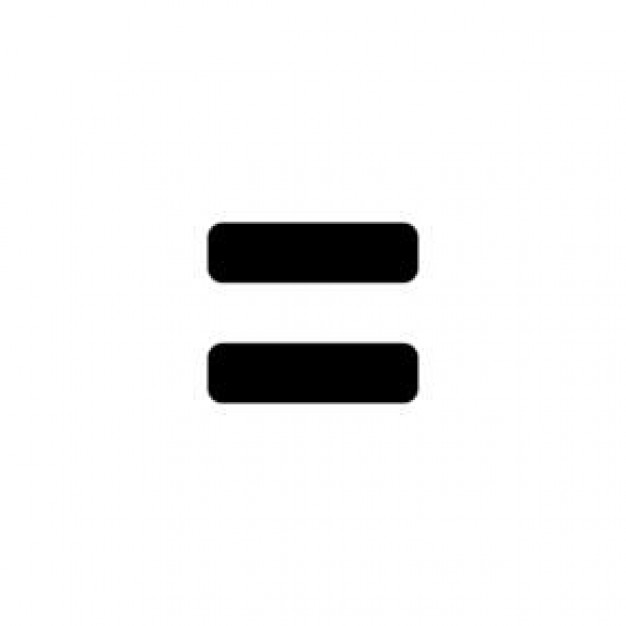

- Sobre Mi
- Mi Familia
- Creaciones
- Taller con Milly
Este espacio esta dedicado a mi estancia en Laboratoria, hablaré un poco sobre mi, pero sobre todo de las cosas que iré aprendiendo en el taller con Milly
Taller con Milly
|  | ¿Qué significa género? |
|  | ¿Qué es el machismo? |
|  | ¿Qué es el feminismo? |
|  | ¿Qué es la igualdad y la equidad? |
¿Qué es la violencia contra las mujeres?
Las Naciones Unidas definen la violencia contra la mujer como "todo acto de violencia de género que resulte, o pueda tener como resultado un daño físico, sexual o psicológico para la mujer, inclusive las amenazas de tales actos, la coacción o la privación arbitraria de libertad, tanto si se producen en la vida pública como en la privada".
Creaciones
¿ Qué significa género ?
¿Qué significa ser hombre o mujer? El hecho de ser hombre o mujer no está determinado por los órganos sexuales exclusivamente. El género incluye una combinación compleja de creencias, comportamientos y características. ¿Actúas, hablas y te comportas como un hombre o como una mujer? ¿Te comportas de manera femenina, masculina o de las dos formas? Éstas son preguntas que nos ayudan a llegar al centro de nuestro género y de nuestra identidad de género. Son pocas las respuestas fáciles en lo que se refiere al género y a la identidad de género; por eso, es normal hacerse preguntas. A continuación, se incluyen algunas de las preguntas más comunes sobre el género y la identidad de género. Esperamos que te sean de utilidad.
Los roles determinan acciones y comprenden las expectativas y normas que una sociedad establece sobre como debe actuar y sentir una persona en función de que sea mujer o hombre, prefigurando, así, una posición en la estructura social y representando unas funciones que se atribuyen y que son asumidas diferencialmente por mujeres y hombres.
Los roles femeninos son los relacionados con todas las tareas asociadas a la reproducción, crianza, cuidados, sustento emocional… y están inscritos, fundamentalmente, en el ámbito doméstico.
Los roles masculinos están asociados a las tareas que tienen que ver con el productivo, el mantenimiento y sustento económico, principalmente desarrollados en el ámbito público.
Específicamente, los estereotipos de género están relacionados con las características sociales y culturalmente asignadas a hombres y mujeres, a partir de las diferencias físicas basadas en su sexo. Si bien los estereotipos afectan tanto a hombres como a mujeres, tienen un mayor efecto negativo en las segundas, pues históricamente la sociedad les ha asignado roles secundarios, socialmente menos valorados y jerárquicamente inferiores. Esta subordinación social se vuelve particularmente grave cuando se institucionaliza a través del Derecho. Ello sucede cuando leyes, políticas públicas y prácticas gubernamentales incorporan, refuerzan y perpetúan un estereotipo de género, dándole fuerza y autoridad. En última instancia, el efecto consiste en que la sociedad lo acepta de manera acrítica como verdadero e inevitable, y las personas terminan por conformar y adecuar su comportamiento e imagen propia al mandato social.